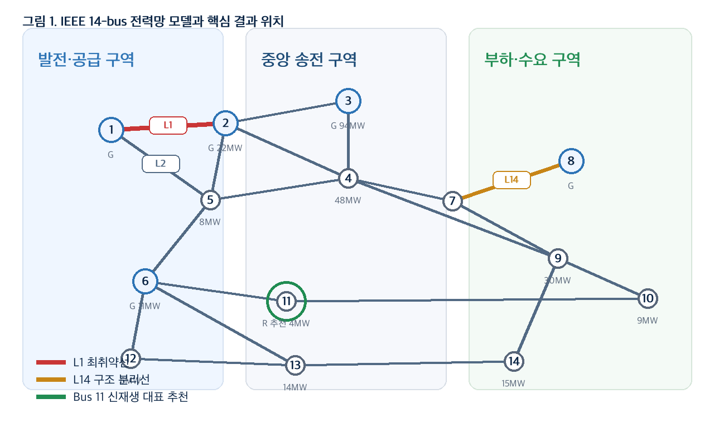
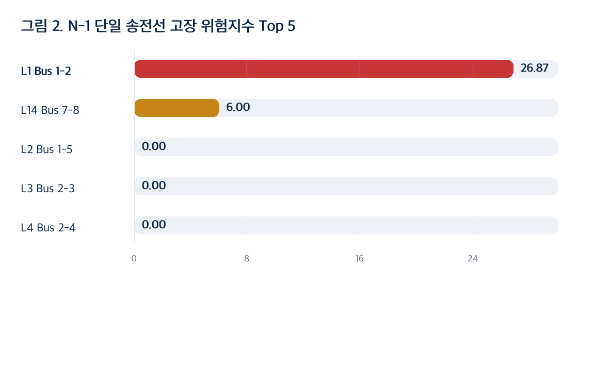
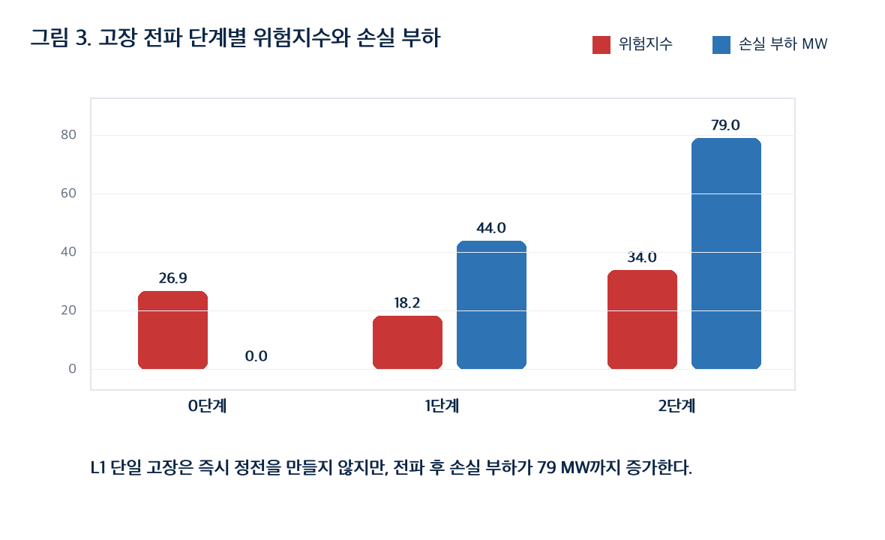
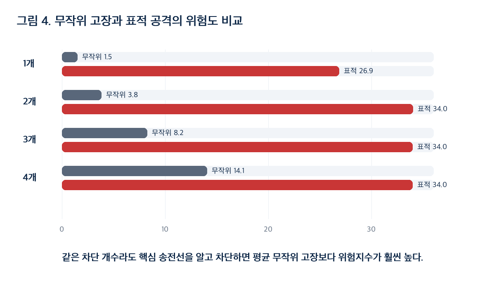
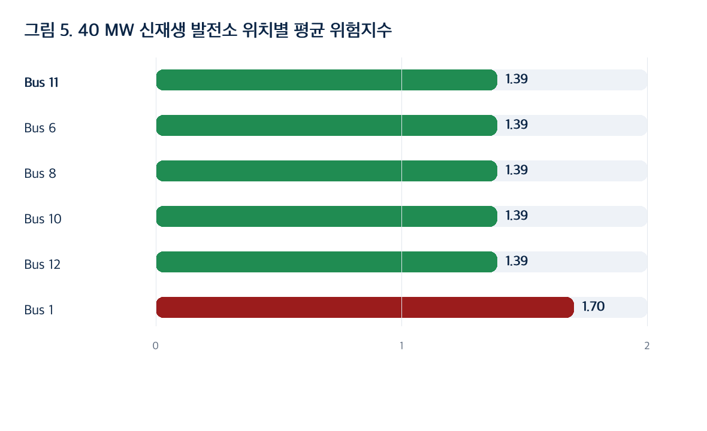

주제 2. 정전을 막는 스마트그리드 설계
IEEE 14-bus 전력망의 N-1 고장 분석과 고장 전파 시뮬레이션
전력망을 그래프로 모델링하고, 송전선 고장 이후 전력흐름이 어떻게 재분배되는지 계산하여 최취약 송전선, 표적 공격 위험, 신재생 발전소 추천 위치를 도출했다.

보고서 구성
교수님 질문에 대한 직접 답
단순히 그래프가 연결되어 있는지만 보는 방식으로는 전력망의 과부하 위험을 놓칠 수 있다. 그래서 연결성 baseline 위에 N-1/DC 전력흐름 분석을 결합했다.
| 과제 질문 | 시뮬레이션 결과 | 현실적 의미 |
|---|---|---|
| 어떤 송전선 1개가 가장 위험한가? | L1(Bus 1-2). 위험지수 26.87, 과부하 49.36 MW | 직접 정전은 없지만 연쇄 고장의 출발점이 될 수 있어 최우선 감시 대상이다. |
| 무작위 고장과 표적 공격 중 무엇이 더 위험한가? | 1개 차단 기준 무작위 평균 위험 1.48, 표적 L1은 26.87 | 모든 선로를 같은 우선순위로 보호하면 안 되고 취약선 중심 보안이 필요하다. |
| 신재생 발전소는 어디에 두는 것이 좋은가? | 40 MW 기준 Bus 11 대표 추천. Bus 6, 8, 10, 12도 같은 평균 위험 1.39 | 발전 집중지보다 부하 구역 근처 분산 배치가 안정성 개선에 유리하다. |
| 확장 시각화는 무엇인가? | L1 → L2 → L14 고장 전파에서 손실 부하 79 MW, 공급률 69.5% | 단일 고장보다 고장 이후 전력흐름 재분배 감시가 중요하다. |
현실 문제와 연구 질문
전력망은 도로망처럼 우회 경로가 있어도, 우회한 전력이 남은 선로 용량을 넘으면 정전 위험이 커진다.
전력망은 여러 발전소와 수요지가 송전선으로 연결된 네트워크이다. 평상시에는 전력이 여러 선로로 나뉘어 흐르지만, 특정 송전선이 끊기면 그 전력은 남은 선로로 우회한다.
문제는 우회 전력이 특정 선로의 허용 용량을 넘을 수 있다는 점이다. 이때 과부하가 발생하고, 과부하가 다시 추가 고장과 정전으로 이어질 수 있다.
전력망을 그래프로 변환
IEEE 14-bus 형태의 교육용 전력망을 사용했고, 총 부하는 259.2 MW이다.
| 그래프 요소 | 전력망 의미 | 시뮬레이터 구현 |
|---|---|---|
| 정점 V | 발전소, 변전소, 수요지 | Bus 1-14 |
| 간선 E | 송전선 | L1-L20 |
| 정점 속성 | 부하, 발전 가능 용량 | load MW, genCap MW |
| 간선 속성 | 리액턴스, 송전 용량 | x, rate MW |
| 고장 상태 | 차단된 송전선 | failedLineIds |
| 평가 지표 | 부하 손실, 과부하, 연결요소 수 | riskIndex |
교안 알고리즘과 최신 기법 결합
교안 알고리즘은 구조적 연결성을 보고, 최신 기법은 연결된 상태에서도 생기는 전력흐름 과부하를 계산한다.
| 구분 | 사용 방법 | 알 수 있는 것 | 한계 |
|---|---|---|---|
| 교안 알고리즘 baseline | 연결성, 연결요소, MST, 우회 경로 | 송전선 제거 후 그래프가 분리되는지 확인 | 연결되어 있어도 과부하가 생기는 상황은 알기 어렵다. |
| 최신 기법 | N-1 contingency, DC 전력흐름, 고장 전파 | 선로 과부하, 부하 손실, 위험지수 계산 | 실제 AC 전력망의 전압·주파수·보호계전 동작까지 포함하지는 않는다. |
실험 결과
기본 상태는 안정적이지만, L1 단일 고장과 표적 공격에서는 과부하와 손실 부하가 급격히 커진다.

| 순위 | 송전선 | 구간 | 연결성 | 위험 | 손실 MW | 과부하 MW |
|---|---|---|---|---|---|---|
| 1 | L1 | Bus 1-2 | 연결 유지 | 26.87 | 0.0 | 49.36 |
| 2 | L14 | Bus 7-8 | 2개 연결요소 | 6.00 | 0.0 | 0.00 |
| 3 | L2 | Bus 1-5 | 연결 유지 | 0.00 | 0.0 | 0.00 |
| 4 | L3 | Bus 2-3 | 연결 유지 | 0.00 | 0.0 | 0.00 |
| 5 | L4 | Bus 2-4 | 연결 유지 | 0.00 | 0.0 | 0.00 |
L1은 끊겨도 그래프가 계속 연결되어 있고 부하 손실도 0 MW이다. 하지만 남은 송전선에 전력흐름이 몰려 49.36 MW 과부하가 발생하므로, 연쇄 고장의 출발점으로 해석해야 한다.
Baseline과 최신 기법의 차이
연결성만 보면 L1의 위험이 잘 보이지 않지만, 전력흐름을 계산하면 핵심 취약선으로 드러난다.
| 송전선 | 연결성 baseline 결과 | N-1/DC 전력흐름 결과 | 해석 |
|---|---|---|---|
| L1 Bus 1-2 | 그래프는 계속 연결됨 | 위험지수 26.87, 과부하 49.36 MW | 연결성만 보면 놓치는 핵심 취약선 |
| L14 Bus 7-8 | 전력망이 2개 연결요소로 분리됨 | 위험지수 6.00, 부하 손실 0 MW | 구조적 분리는 생기지만 부하 피해는 작음 |
고장 전파 시뮬레이션
초기 L1 고장은 즉시 정전을 만들지 않지만, 전력흐름 재분배 이후 추가 차단이 발생하면 손실 부하가 커진다.

| 단계 | 새 차단 | 누적 차단 | 위험 | 손실 MW | 공급률 |
|---|---|---|---|---|---|
| 0 | L1 | L1 | 26.87 | 0.0 | 100.0% |
| 1 | L2 | L1, L2 | 18.23 | 44.0 | 83.0% |
| 2 | L14 | L1, L2, L14 | 33.96 | 79.0 | 69.5% |
무작위 고장과 표적 공격 비교
취약한 송전선을 알고 차단하는 표적 공격은 같은 차단 수에서도 무작위 고장보다 훨씬 위험하다.

| 차단 수 | 무작위 평균 위험 | 표적 공격 위험 | 무작위 손실 MW | 표적 손실 MW |
|---|---|---|---|---|
| 1 | 1.48 | 26.87 | 0.00 | 0.0 |
| 2 | 3.81 | 34.00 | 0.49 | 0.0 |
| 3 | 8.24 | 33.96 | 1.81 | 79.0 |
| 4 | 14.07 | 33.96 | 5.52 | 79.0 |
신재생 발전소 위치 비교
40 MW 신재생 발전소를 각 버스에 추가하고 전체 N-1 평균 위험을 다시 계산했다.

| 순위 | 위치 | 평균 위험 | 최악 위험 | 평균 손실 MW | 평균 과부하 MW |
|---|---|---|---|---|---|
| 1 | Bus 11 | 1.39 | 21.88 | 0.00 | 1.93 |
| 2 | Bus 6 | 1.39 | 21.88 | 0.00 | 1.93 |
| 3 | Bus 8 | 1.39 | 21.88 | 0.00 | 1.93 |
| 4 | Bus 10 | 1.39 | 21.88 | 0.00 | 1.93 |
| 5 | Bus 12 | 1.39 | 21.88 | 0.00 | 1.93 |
| 14 | Bus 1 | 1.70 | 28.00 | 0.00 | 3.15 |
Bus 11만 유일한 정답이라는 의미가 아니다. Bus 6, 8, 10, 12도 같은 평균 위험을 보인다. 핵심은 발전이 이미 집중된 Bus 1보다 부하 구역 근처의 분산형 발전 배치가 더 안정적이라는 점이다.
현실 적용 답변
시뮬레이션 결과를 실제 스마트그리드 운영 관점의 대응 전략으로 정리했다.
L1(Bus 1-2)을 우선 보호한다. 실시간 전류·온도 감시, 보호계전 설정 점검, 우회 경로 확보가 필요하다.
충분하지 않다. 연결성 분석 뒤 N-1/DC 전력흐름을 수행해 과부하까지 확인해야 한다.
표적 공격이 무작위보다 위험하므로 취약선 접근 통제, 사이버 보안, 차단 시 자동 복구 시나리오가 필요하다.
Bus 11 계열 부하 구역 후보를 우선 검토한다. 실제 계통에서는 부지, 부하, 전압 조건을 함께 평가해야 한다.
본 시뮬레이션은 DC 전력흐름 근사를 사용했기 때문에 전압, 무효전력, 주파수 안정도, 보호계전기 동작 시간은 단순화했다. 개선한다면 AC 전력흐름, 시간대별 부하, 태양광·풍력 변동, ESS 배치, 실제 지역 계통 데이터를 추가할 수 있다.
전체 N-1 분석과 발표 Q&A
발표 때 질문이 들어올 수 있는 부분까지 함께 정리했다.
전체 N-1 분석 결과 보기
| 순위 | 송전선 | 구간 | 위험 | 손실 MW | 과부하 MW | 연결요소 |
|---|---|---|---|---|---|---|
| 1 | L1 | Bus 1-2 | 26.87 | 0.0 | 49.36 | 1 |
| 2 | L14 | Bus 7-8 | 6.00 | 0.0 | 0.00 | 2 |
| 3 | L2 | Bus 1-5 | 0.00 | 0.0 | 0.00 | 1 |
| 4 | L3 | Bus 2-3 | 0.00 | 0.0 | 0.00 | 1 |
| 5 | L4 | Bus 2-4 | 0.00 | 0.0 | 0.00 | 1 |
| 6 | L5 | Bus 2-5 | 0.00 | 0.0 | 0.00 | 1 |
| 7 | L6 | Bus 3-4 | 0.00 | 0.0 | 0.00 | 1 |
| 8 | L7 | Bus 4-5 | 0.00 | 0.0 | 0.00 | 1 |
| 9 | L8 | Bus 4-7 | 0.00 | 0.0 | 0.00 | 1 |
| 10 | L9 | Bus 4-9 | 0.00 | 0.0 | 0.00 | 1 |
| 11 | L10 | Bus 5-6 | 0.00 | 0.0 | 0.00 | 1 |
| 12 | L11 | Bus 6-11 | 0.00 | 0.0 | 0.00 | 1 |
| 13 | L12 | Bus 6-12 | 0.00 | 0.0 | 0.00 | 1 |
| 14 | L13 | Bus 6-13 | 0.00 | 0.0 | 0.00 | 1 |
| 15 | L15 | Bus 7-9 | 0.00 | 0.0 | 0.00 | 1 |
| 16 | L16 | Bus 9-10 | 0.00 | 0.0 | 0.00 | 1 |
| 17 | L17 | Bus 9-14 | 0.00 | 0.0 | 0.00 | 1 |
| 18 | L18 | Bus 10-11 | 0.00 | 0.0 | 0.00 | 1 |
| 19 | L19 | Bus 12-13 | 0.00 | 0.0 | 0.00 | 1 |
| 20 | L20 | Bus 13-14 | 0.00 | 0.0 | 0.00 | 1 |
| 예상 질문 | 답변 요지 |
|---|---|
| 왜 L1이 가장 위험한가? | L1은 끊겨도 그래프는 연결되지만 남은 선로에 전력흐름이 몰려 49.36 MW 과부하가 발생한다. 그래서 연쇄 고장의 출발점으로 위험하다. |
| 위험지수 0인 선로는 중요하지 않은가? | 현재 단일 고장 조건에서 큰 피해가 없다는 뜻이다. 다중 고장이나 부하 증가 조건에서는 위험해질 수 있다. |
| Bus 11이 유일한 정답인가? | 아니다. Bus 6, 8, 10, 12도 같은 평균 위험을 보인다. 핵심은 발전 집중지보다 부하 구역 분산 배치가 낫다는 점이다. |
| 실제 전력망에도 그대로 적용할 수 있는가? | 그대로 적용할 수는 없다. 실제 적용에는 AC 전력흐름, 보호계전, 전압·주파수 안정도, 실제 계통 데이터가 필요하다. |